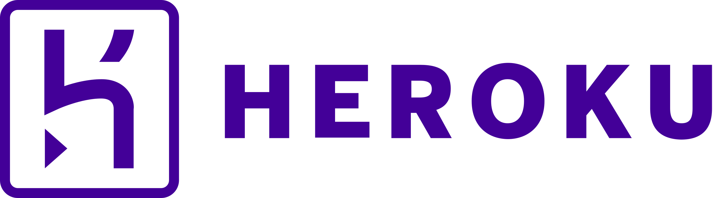
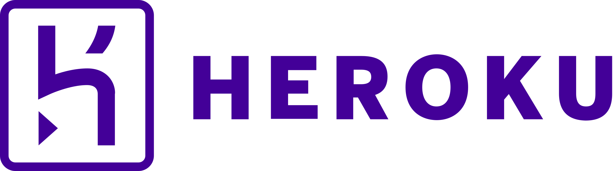

Killian Marty
Je suis Développeur Full Stack & DevOps actuellement à la recherche d'une alternance
Killian Marty
Je suis Développeur Full Stack & DevOps actuellement à la recherche d'une alternance
Voici quelques de mes compétences que j'ai pu affiner au fur et à mesure de mes réalisations

Back-End
Conceptualiser une base de données via SQL, et développer des composants métier côté serveur avec PHP

Front-End
Développer la partie dynamique des interfaces utilisateur web ou web mobile

Interface Utilisateur
Maquetter et réaliser des interfaces utilisateur web ou web mobile
À propos de moi
Je suis Killian Marty, un Développeur Full Stack passionné par la création de solutions innovantes et efficaces.
Pratiquant l'informatique depuis deux ans, J'ai commencé mon parcours en tant qu'autodidacte, explorant et apprenant par moi-même les fondamentaux du développement web. Après une première année de découverte et de pratique personnelle, j'ai décidé de formaliser et de consolider mes connaissances en me réorientant vers une formation diplômante de niveau Bac+2 chez Studi.
Ce parcours académique m'a permis de gagner énormément en compétences. Durant cette formation, j'ai eu l'opportunité de travailler sur des projets complets, allant de la conceptualisation à la réalisation. J'ai appris à créer des mockups et des wireframes sur Figma pour définir le style et l'interface utilisateur de mes sites. Ensuite, j'ai approfondi mes compétences en bases de données, tant relationnelles que NoSQL, en élaborant des diagrammes UML pour structurer les données efficacement.
En termes de développement, j'ai acquis une solide maîtrise de plusieurs langages et technologies, notamment PHP, SQL, et JavaScript. Un des projets marquants de ma formation a été la création d'un site Full Stack, où j'ai pu appliquer toutes ces compétences de manière intégrée.
Actuellement, Je suis au sein de l'école IPSSI de Lyon, à la recherche d'une alternance pour un Bachelor Développeur Web et DevOps (Bac+3), sur un Rythme de 3 semaines de Travail - 1 semaine de Cours. Mon objectif serait à terme, de reprendre mes études afin de me spécialiser dans l'ingénierie Web (Bac+5).
Si vous avez des projets passionnants qui nécessitent un développeur, ainsi que des propositions d'offres en Alternance, n'hésitez pas à télécharger mon CV, et me contacter par messagerie ou téléphone.
 



Mes projets
Voici ce que j'ai pu réaliser au cours de ces 2 dernières années, notamment dans le cadre de ma formation.
Chaque projet a son importance, car ils jouent sur des technologies différentes,
sur lesquels j'ai pu apprendre, faire des erreurs, m'améliorer sur base de cas d'utilisation concrets.
Ce projet de Clone de Youtube est le premier que j'ai réalisé.
Il m'a permis de m'habituer aux fondamentaux de HTML et CSS,
réaliser une première interface responsive, et gérer les couleurs et survols par tooltips.

Mon plus gros projet Full Stack à ce jour reste Arcadia.
Réalisé dans le cadre de ma formation, ce projet aura été le plus
formateur, notamment sur la conception d'un site web en condition d'Entreprise.
Le projet TodoList est une version 2.0 d'un ancienne TodoList Javascript que j'avais réalisé.
Celle ci présente une interface utilisateur plus simple à comprendre,
et m'a permis de me former à la librairie React.
Contactez-moi
En espérant que mes présentations aurons sû vous convaincre,
je vous invite à me contacter pour toute demande, question, ou proposition de collaboration.
Numéro : +33624499165
Adresse Mail : matykillian7@gmail.com